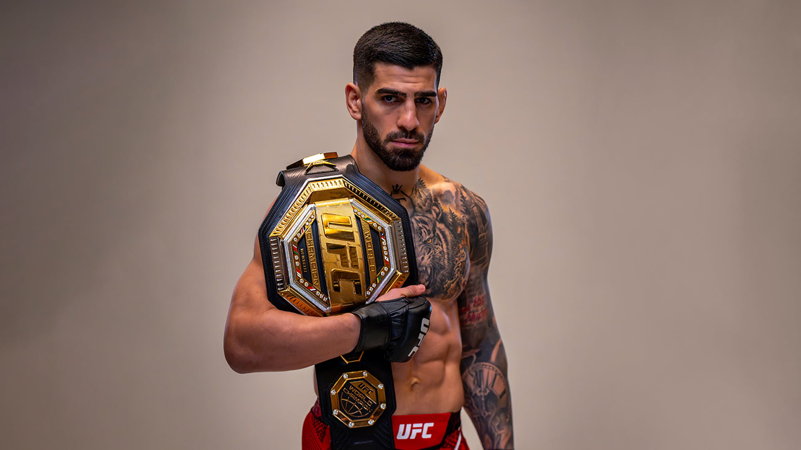
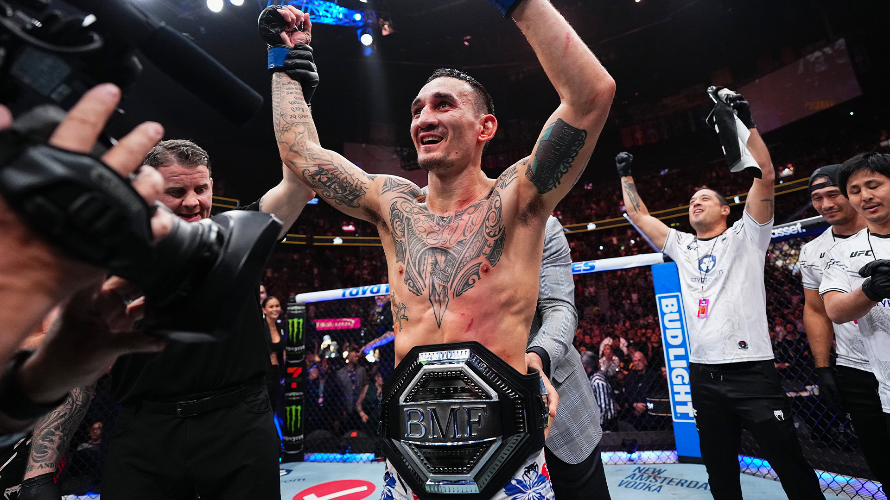
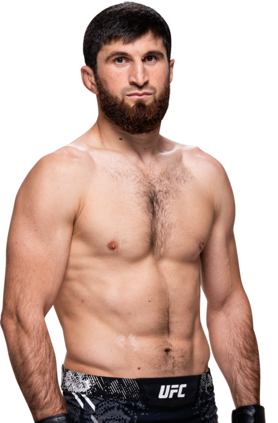
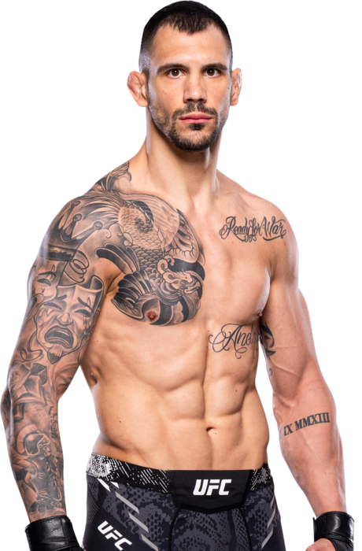

| Últimas 5 peleas | |||||
|---|---|---|---|---|---|
|  | Ilia Topuria vs Alexander Volkanovski WIN/KO | Ilia Topuria vs Josh Emmett WIN/UD | Ilia Topuria vs Bryce Mitchell WIN/SUM | Ilia Topuria vs Jai Herbert WIN/KO | Ilia Topuria vs Ryan Hall WIN/TKO |
|  | Max Holloway vs Justin Gaehtje WIN/KO | Max Holloway vs Korean Zombie WIN/KO | Max Holloway vs Arnold Allen WIN/UD | Max Holloway vs Alexander Volkanovski LOS/UD | Max Holloway vs Yair Rodríguez WIN/UD |



